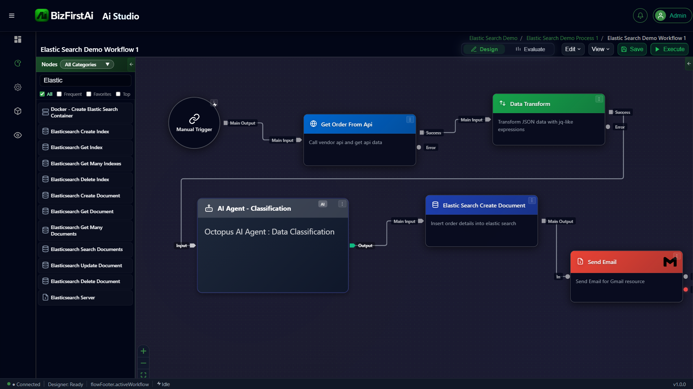

Fetch & Insert Workflow
An end-to-end agentic pipeline that fetches order data from a vendor API, transforms it using a jq filter, classifies it with an AI Agent, inserts the result into Elasticsearch, and sends an email notification — all in a single visual workflow.

Flow Diagram
Step-by-Step Flow
The workflow executes six nodes in sequence. Each node passes its output to the next via the Main Output port.
Manual Trigger
User-initiated start node. Fires the workflow on demand. No input data required — acts as the entry point for the execution graph.
Get Order From Api
Makes an HTTP call to a vendor API endpoint and retrieves raw order data. The response is passed downstream as JSON.
Data Transform
Applies a jq filter expression to reshape the raw API response — extracting, renaming, or restructuring fields into the shape required for AI classification.
AI Agent — Classification
Passes the transformed data through an Octopus AI Agent configured for data classification. The agent reasons over the payload and annotates it with category labels or metadata.
Elasticsearch Create Document
Inserts the classified order details as a new document into the configured Elasticsearch index. Uses the Elasticsearch Server satellite for connection details.
Send Email
Dispatches a notification email via the Gmail Integrator node, confirming that the order has been classified and stored in Elasticsearch.
jq — a lightweight, portable JSON processor. It allows zero-code field mapping between an API response shape and the shape expected by the AI Agent, making the workflow resilient to API schema changes.
Available Elasticsearch Nodes
The Studio node palette provides a complete set of Elasticsearch operations. All nodes connect to an Elasticsearch Server satellite for authentication and connection settings.
Pattern Summary
| Stage | Node Type | Responsibility |
|---|---|---|
| Trigger | Manual Trigger | Start execution on demand |
| Fetch | HTTP / API node | Retrieve external data |
| Transform | Data Transform (jq) | Reshape payload |
| Classify | Octopus AI Agent | AI reasoning over data |
| Persist | Elasticsearch Create Document | Store enriched record |
| Notify | Send Email (Gmail) | Confirm completion |